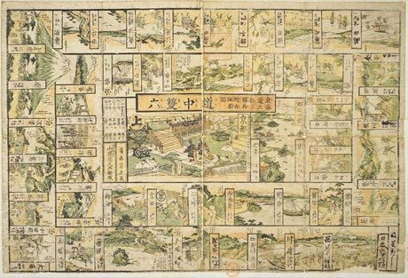

Home / River Valleys and First Cities / Japan and Korea
Playable heritage gameE-sugoroku
Also known as 絵双六 · Picture sugoroku · Sugoroku · Tokaido travel board
A travel race along the old Tokaido road, from Nihonbashi in Edo to Kyoto. Throw a die and walk the fifty-three post stations; a few stops bring a lift ahead, a setback or a night at the inn. A pastime of Edo-period print culture, played from New Year on the floor.


How to play
- Both travellers set out from Nihonbashi, the bridge in Edo, and take turns throwing one die.
- Walk your traveller that many stations west along the road: Shinagawa, Kawasaki, Kanagawa and on towards Kyoto.
- Some stops carry an event: a palanquin or ferry carries you ahead, a landslide or a lost way sends you back, and a night at the inn, a mountain barrier or a flooded river makes you miss a turn.
- The first traveller to reach Kyoto, the finish at the end of the road, wins.
Rules at a glance
- One die and one traveller each. Nihonbashi is the start; the stations run from Shinagawa (1) to Otsu (53), and Kyoto (54) is the finish.
- Both travellers may stand on the same station; nobody is sent back by the other.
- Lifts ahead: Kanagawa (3) to Hiratsuka (7), Kakegawa (26) to Maisaka (30), Shirasuka (32) to Fujikawa (37), the Miya ferry (41) to Shono (45), Tsuchiyama (49) to Kusatsu (52).
- Setbacks: Yui (16) back to Numazu (12), Akasaka (36) back to Futagawa (33), Ishibe (51) back to Sakanoshita (48).
- The Hakone barrier (10), Hamamatsu (29), Okazaki (38) and Seki (47) cost one turn; the flooded river at Shimada (23) costs two turns.
- Kyoto must be reached exactly: a throw that is too large is counted back from Kyoto.
- The first traveller to reach Kyoto wins.
About the tradition
Picture sugoroku sheets were printed in Edo-period Japan, and the Tokaido road from Edo to Kyoto was one of their favourite subjects. Printed boards differed from publisher to publisher; the events here are our own and follow the geography of the road. The station names are the traditional fifty-three post towns.
Origins
Usually placed in the era of River Valleys and First Cities (about 3000 to 1000 BCE), although its exact origins are uncertain, within the cultural world of Japan and Korea.
Credits
- Game design: World Heritage Games (original)
- Photo: Keisai Eisen, Public domain, source on Wikimedia Commons
- Text: CC BY-SA 4.0, World Heritage Games.
Sources

Get the app
E-sugoroku is coming to the App Store and Google Play. One app, many traditions, no account needed.
More games to play


Sashiko Stitch Patterns
Japan · Crafts and makingPlay preview · in the Textile Crafts of the World app


Temari Thread-Ball Patterns
Japan · Crafts and makingPlay preview · in the Paper & Paint of the World app
More from Japan


Blacksmith's Forge
United Kingdom +4 · Crafts and makingPlay preview · in the Woodcraft & Metal of the World app

Dougong Bracket Stacking
China +2 · Puzzles and mind games
Dumpling Pleating
China +2 · Crafts and making